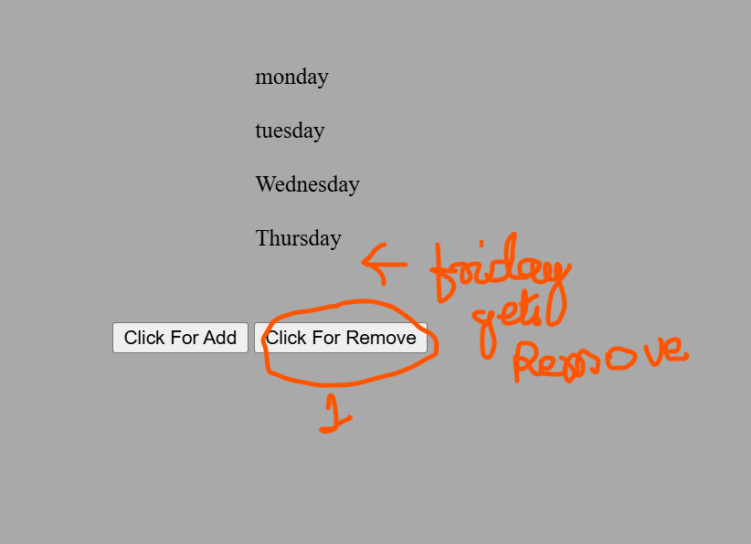

JavaScript: JavaScript is a versatile, client-side scripting language designed to create dynamic and interactive web pages, enhancing the user experience on websites.
JavaScript allows developers to implement complex features on web pages, such as displaying timely content updates, interactive forms, animations, and much more. Unlike server-side languages, JavaScript is primarily executed in the browser, allowing it to respond to user actions instantly.
Scripts in JavaScript: A script is a JavaScript program that can be added directly to the HTML of any web page. When the page loads, the script is executed automatically, bringing life to the web page elements without requiring a page reload.
Data Types in JavaScript: JavaScript supports several fundamental data types that can be divided into two main categories: Primitive and Non-Primitive (or Reference) types.
1. Primitive Data Types:
- Number: Represents both integer and floating-point numbers. Example:
42,3.14. - String: A sequence of characters, used to represent text. Example:
"Hello, World!". - Boolean: Represents a logical entity and can have only two values:
trueorfalse. - Undefined: A variable that has been declared but not assigned a value is
undefined. - Null: Represents the intentional absence of any object value. It’s often used to signify “no value” or “empty.”
- Symbol: Represents a unique identifier and is used for creating unique keys in objects.
- BigInt: Used for very large integers, beyond the safe limit for the
Numbertype. Example:123456789012345678901234567890n.
2. Non-Primitive (Reference) Data Types:
- Object: Used to store collections of data or more complex entities. Objects can contain key-value pairs, making them essential for structuring data. Example:
{ name: "Alice", age: 25 }. - Array: A special type of object that holds an ordered list of values. Example:
[1, 2, 3, 4]. - Function: A block of code designed to perform a specific task, also considered a type of object in JavaScript.
JavaScript is a loosely typed language, meaning variables are not bound to a specific data type and can change types dynamically. Understanding these data types is fundamental to managing data and building efficient programs.
JavaScript has three main ways to declare variables: let, var, and const. Each has distinct characteristics that determine how the variable behaves in terms of scope, re-assignment, and initialization.
Overview of let, var, and const
FIRST LEARN WHAT IS BLOCK SCOPE AND FUNCTIONAL SCOPE
- var: The traditional way to declare variables. It has function scope, meaning it's accessible throughout the function in which it's defined. Variables declared with
varcan be re-assigned and re-declared within the same scope. - let: Introduced in ES6,
letallows block-scoped variable declarations. Variables declared withletcan be re-assigned but not re-declared within the same scope. - const: Also introduced in ES6,
constis used for variables that should not be re-assigned. It’s block-scoped and must be initialized at the time of declaration.
difference

Hoisting is the default behaviour of javascript where all the variable and function declarations are moved on top.
This means that irrespective of where the variables and functions are declared, they are moved on top of the scope. The scope can be both local and global.
Difference betwwen "==" and "==="?
The this keyword in JavaScript is a special identifier that refers to the context in which a function or expression is executed. Its value changes depending on how and where the function is called. Understanding this is crucial for managing function context and object behavior.
Different Uses of this
- Global Context (Global Scope): In the global context or outside any function,
thisrefers to the global object (windowin browsers). - Function Context (Simple Function Call): Inside a regular function,
thisrefers to the global object (windowin browsers) unless instrict mode, where it becomesundefined. - Method Context (Method Call): When
thisis used in an object’s method, it refers to the object that owns the method. This is common in object-oriented JavaScript. - Event Handlers: In event handler functions,
thisrefers to the HTML element that received the event. - Arrow Functions: In arrow functions,
thisdoesn’t refer to the function’s local context. Instead, it inheritsthisfrom the enclosing lexical context, making arrow functions useful in scenarios where you want to preservethisfrom an outer scope.
Examples of this in Different Contexts
1. Global Context:
console.log(this); // Refers to the window object in a browser2. Function Context:
function showThis() {
console.log(this);
}
showThis(); // Refers to window object in non-strict mode; undefined in strict mode
3. Method Context:
const person = {
name: 'Alice',
greet: function() {
console.log(this.name); // Refers to the person object
}
};
person.greet(); // Outputs: Alice
4. Event Handler:
document.getElementById('myButton').addEventListener('click', function() {
console.log(this); // Refers to the element with id 'myButton'
});
5. Arrow Function:
const person = {
name: 'Alice',
greet: () => {
console.log(this); // Refers to the global context, not the person object
}
};
person.greet(); // Outputs: window object in browsers
To use this effectively, it’s essential to recognize the context in which a function is executed and the intended binding. JavaScript provides several ways, like call, apply, and bind, to control the value of this explicitly.
JAVASCRIPT excutes our code :-
Step1 :- Global Execution or (Global Environment)
FIRST ("This") Locate the Global Execution context;
Step2 :- Memory Creation Phase :- Where for each variable memory is assigned and initially it is UNDEFINED
Step3 :-Execution Phase Where the value is assigned to each variable .
CALL STACK :- In JavaScript, the call stack is like a to-do list for functions in your program. It follows the rule of "Last In, First Out," meaning the last thing added is the first to be done. A call stack is like a script's roadmap for a JavaScript Engine.
The Document Object Model (DOM) is a programming interface for web documents. It represents the structure of a document as a tree of objects, allowing JavaScript to access, manipulate, and modify HTML and XML documents dynamically.
Understanding the DOM Structure
The DOM represents a webpage as a tree of nodes, where each element in the HTML document is represented by a node in the DOM tree. Nodes can be elements, text, comments, or attributes.
Common DOM Methods
JavaScript provides several methods to interact with the DOM:
document.getElementById(id)- Selects an element by itsid.document.getElementsByClassName(className)- Selects all elements with a given class name.document.getElementsByTagName(tagName)- Selects all elements with a given tag name.document.querySelector(selector)- Selects the first element that matches a CSS selector.document.querySelectorAll(selector)- Selects all elements that match a CSS selector.
Manipulating the DOM
Once an element is selected, JavaScript can manipulate it in various ways, such as changing its content, attributes, or styles.
- Changing Content:
element.innerHTMLorelement.textContentmodifies the HTML or text inside an element. - Changing Attributes:
element.setAttribute(attribute, value)sets a new attribute or changes an existing attribute's value. - Changing Styles:
element.style.property = valuemodifies the CSS styles of an element.

The DOM, combined with JavaScript, allows for creating dynamic and interactive web pages by modifying the structure, content, and styles of elements on the fly, reacting to user input and events.
Inserting Elements into the DOM
Inserting elements allows us to dynamically add new HTML elements to the page. JavaScript provides various methods to add new nodes to the DOM.
element.appendChild(newElement)- Adds a new element as the last child of a specified parent element.element.insertBefore(newElement, referenceElement)- Inserts a new element before a reference element.element.innerHTML += "new content"- Adds new content directly inside an element.
Deleting Elements from the DOM
Deleting elements involves removing unwanted nodes from the DOM tree. JavaScript provides methods to remove elements easily.
element.remove()- Removes the specified element from the DOM.parentElement.removeChild(childElement)- Removes a specified child element from its parent.
Manipulating Elements in the DOM
Manipulation refers to modifying elements, such as changing their attributes, content, or styles.
- Changing Content: Use
element.innerHTMLorelement.textContentto modify the content inside an element. - Changing Attributes: Use
element.setAttribute(attribute, value)to set or change an attribute. - Changing Styles: Use
element.style.property = valueto modify an element's inline CSS styles.
HTML CODE
JAVASCRIPT CODE


Understanding async and await in JavaScript
In JavaScript, async and await are used to handle asynchronous operations more efficiently, making code easier to read and maintain. These keywords allow us to write asynchronous code that looks and behaves like synchronous code, improving readability without changing the fundamental asynchronous nature.
How async and await Work
asyncFunction:- The
asynckeyword is added before a function to tell JavaScript that the function will perform asynchronous operations. - An
asyncfunction always returns a Promise. If the function has a return value, JavaScript automatically wraps it in a resolved Promise.
- The
awaitKeyword:- The
awaitkeyword pauses the execution of theasyncfunction until the Promise followingawaitis resolved or rejected. - It only works within
asyncfunctions, and it allows JavaScript to handle the result of a Promise without using.then()or.catch()chaining.
- The
Flow Explanation
Let's break down the flow with a code example:
async function fetchData() {
try {
console.log("Fetching data...");
// Simulate a network request with a promise-based function
let response = await new Promise((resolve, reject) => {
setTimeout(() => {
resolve("Data received");
}, 2000);
});
console.log(response); // Logs after 2 seconds
return "Process complete";
} catch (error) {
console.error("Error fetching data:", error);
}
}
fetchData().then((message) => console.log(message)); // Logs "Process complete"
Flow of Execution
- The
fetchData()function is defined asasync, so it returns a Promise. - The
console.log("Fetching data...");line executes immediately. - The
awaitkeyword pauses execution at the linelet response = await ...until the Promise resolves. - After 2 seconds, the Promise resolves, and
console.log(response);logs"Data received". - Finally, the function returns
"Process complete", which is logged in the.then()handler outside the function.
Understanding the JavaScript Event Loop with async and await
This section explains how JavaScript handles asynchronous operations through the call stack, Web APIs, promises, and the event loop.
JavaScript Engine
The JavaScript engine has a call stack that executes functions one at a time and a memory heap to store data.
Web APIs
Web APIs handle asynchronous tasks, like setTimeout, fetch, and DOM events, outside the main thread. When these tasks are complete, their callbacks are sent to the task queue.
Promises (Microtask Queue)
Promises are added to the microtask queue, which has higher priority than the task queue. Promise callbacks, such as .then(), are handled before the task queue.
Event Loop
The event loop continuously checks if the call stack is empty. If it is, it pushes tasks from the microtask queue first, and then from the task queue, to the call stack.
Code Example
console.log("Start");
setTimeout(() => {
console.log("Timeout Callback"); // Task queue
}, 0);
Promise.resolve("Promise Result").then((result) => {
console.log(result); // Microtask queue
});
console.log("End");
Flow of Execution
- Start and End log immediately because they’re synchronous.
Promise Resultlogs next because the microtask queue is prioritized.Timeout Callbacklogs last because it’s in the task queue.
Higher-Order Functions in JavaScript
A higher-order function is a function that takes another function as an argument, returns a function, or both. Common higher-order functions in JavaScript include:
Filter , Map and Reduce are Higher Order Function
Understanding filter, map, and reduce in JavaScript
In JavaScript, filter, map, and reduce are higher-order functions that operate on arrays to transform or retrieve specific data. Here's how each function works:
filter
The filter function creates a new array with all elements that pass a test implemented by a provided function.
// Example: Filter out numbers less than 10
const numbers = [5, 10, 15, 20];
const filteredNumbers = numbers.filter(num => num >= 10);
console.log(filteredNumbers); // Output: [10, 15, 20]
map
The map function creates a new array by applying a function to each element in the original array.
// Example: Double each number
const numbers = [5, 10, 15, 20];
const doubledNumbers = numbers.map(num => num * 2);
console.log(doubledNumbers); // Output: [10, 20, 30, 40]
reduce
The reduce function executes a reducer function on each element of the array, resulting in a single output value.
// Example: Sum all numbers
const numbers = [5, 10, 15, 20];
const sum = numbers.reduce((accumulator, current) => accumulator + current, 0);
console.log(sum); // Output: 50
Summary
filter– Used to filter elements based on a condition.map– Used to transform elements by applying a function to each.reduce– Used to accumulate values into a single result.
Understanding Promises and fetch in JavaScript
In JavaScript, Promises are used to handle asynchronous operations. The fetch API is built on top of Promises and allows you to make network requests to retrieve resources. Here's an overview of how they work:
Promises
A Promise represents a value that may be available now, or in the future, or never. It has three possible states:
- Pending – Initial state, neither fulfilled nor rejected.
- Fulfilled – Operation completed successfully.
- Rejected – Operation failed.
You can use .then() to handle a successful promise and .catch() for errors.
// Example: Simple Promise
const promise = new Promise((resolve, reject) => {
let success = true;
if (success) {
resolve("Operation succeeded!");
} else {
reject("Operation failed.");
}
});
promise
.then(result => console.log(result)) // Output: "Operation succeeded!"
.catch(error => console.error(error));
fetch API
The fetch API is used to make HTTP requests and returns a Promise that resolves to a Response object. You can use it to request data from a server and handle the response asynchronously.
// Example: Using fetch to make a GET request
fetch("https://jsonplaceholder.typicode.com/posts/1")
.then(response => {
if (!response.ok) {
throw new Error("Network response was not ok");
}
return response.json(); // Parse JSON data
})
.then(data => console.log(data)) // Output: Fetched data
.catch(error => console.error("Fetch error:", error));
Summary
Promises– Represent asynchronous operations that may succeed or fail.fetch– A modern way to make network requests, returning a Promise that resolves with a response object.
Immediately Invoked and Self-Invoking Functions in JavaScript
Immediately Invoked Function Expression (IIFE)
An IIFE is a function that runs as soon as it is defined. It helps create a local scope and avoid polluting the global scope.
// Example of IIFE
(function() {
console.log("This function runs immediately!");
})();
Self-Invoking Function
Self-invoking functions are functions that automatically execute once defined, typically for setup or initialization tasks.
// Example of Self-Invoking Function
(function() {
let count = 0;
count += 1;
console.log("Count:", count); // Output: Count: 1
})();
Summary
- IIFE – Creates a local scope, avoids polluting the global scope.
- Self-Invoking Function – Executes immediately and is commonly used for setup tasks.
Closures and Temporal Dead Zone (TDZ) in JavaScript
Closure
A closure is a function that remembers its lexical scope, even when the function is executed outside of that scope. Closures allow functions to access variables from their containing (outer) scope, even after that scope has finished execution.
AS the inside function and the outside function Uses the same memory thats why then can share variable outside the scope of a function.
// Example of Closure
function createCounter() {
let count = 0;
return function() {
count++;
return count;
};
}
const counter = createCounter();
console.log(counter()); // Output: 1
console.log(counter()); // Output: 2
Temporal Dead Zone (TDZ)
The Temporal Dead Zone (TDZ) is the period between entering a block and the point where a variable is declared using let or const. Accessing a variable in the TDZ results in a ReferenceError.
// Example of TDZ
console.log(x); // ReferenceError: x is in TDZ
let x = 5;
Summary
- Closures – Functions retain access to their outer scope variables even after that scope ends.
- TDZ – Variables declared with
letorconstcannot be accessed before they are declared, causing aReferenceError.
Strings, Arrays, and Objects in JavaScript
Strings
Strings represent text in JavaScript and are a sequence of characters. They have various methods for manipulation.
// Example of String methods
let text = "Hello, World!";
console.log(text.length); // Output: 13
console.log(text.toUpperCase()); // Output: "HELLO, WORLD!"
console.log(text.includes("World")); // Output: true
Arrays
Arrays are ordered collections of elements, typically used to store lists of data. They come with many helpful methods for manipulation.
// Example of Array methods
let numbers = [1, 2, 3, 4];
numbers.push(5); // Adds 5 to the end
console.log(numbers); // Output: [1, 2, 3, 4, 5]
console.log(numbers.slice(1, 3)); // Output: [2, 3]
console.log(numbers.includes(3)); // Output: true
Objects
Objects are collections of key-value pairs, allowing you to group related data and functionality.
// Example of Object usage
let person = {
name: "Alice",
age: 25,
greet: function() {
return "Hello, " + this.name;
}
};
console.log(person.name); // Output: "Alice"
console.log(person.greet()); // Output: "Hello, Alice"
Summary
- Strings – Text data with methods like
length,toUpperCase, andincludes. - Arrays – Ordered collections with methods like
push,slice, andincludes. - Objects – Key-value pair collections with properties and methods for organizing data.
JSON and V8 Engine in JavaScript
JSON (JavaScript Object Notation)
JSON is a lightweight data-interchange format that is easy for humans to read and write and easy for machines to parse and generate. JSON is commonly used for transmitting data in web applications.
// JSON Example
const jsonString = '{"name": "Alice", "age": 25}';
const jsonObject = JSON.parse(jsonString); // Converts JSON string to object
console.log(jsonObject.name); // Output: "Alice"
const newJsonString = JSON.stringify(jsonObject); // Converts object to JSON string
console.log(newJsonString); // Output: '{"name":"Alice","age":25}'
V8 Engine
The V8 Engine is Google's open-source JavaScript engine that compiles JavaScript code to machine code, making it fast and efficient. V8 powers Chrome, Node.js, and other platforms, allowing JavaScript to run both on the client and server side.
Key Features of V8:
- Compiles JavaScript to native machine code for high performance.
- Uses Just-In-Time (JIT) compilation for optimized execution.
- Supports memory management and garbage collection for efficient resource handling.
Summary
- JSON – A format for data exchange, easily parsed with
JSON.parseand converted withJSON.stringify. - V8 Engine – Google’s high-performance JavaScript engine that compiles JavaScript to machine code, powering Chrome and Node.js.
Callbacks in JavaScript
A callback is a function passed into another function as an argument, which is then executed inside the outer function to complete a certain action. Callbacks are commonly used for handling asynchronous operations like data fetching or handling user actions.
Example of a Callback Function
// Function with a callback
function greet(name, callback) {
console.log("Hello, " + name);
callback();
}
// Callback function
function displayMessage() {
console.log("Welcome to JavaScript!");
}
// Passing displayMessage as a callback to greet
greet("Alice", displayMessage);
// Output:
// Hello, Alice
// Welcome to JavaScript!
Common Uses of Callbacks
- Event handling: Handling user actions (e.g., clicks, keypresses).
- Data fetching: Managing asynchronous data requests.
- Timers: Running code after a delay (e.g., with
setTimeout).
Summary
- Callbacks enable functions to be executed after a specific action or asynchronous task.
- Commonly used for handling asynchronous operations and event-driven programming.
KEEP GOING!! JUST ONE LAST STEP..